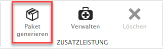
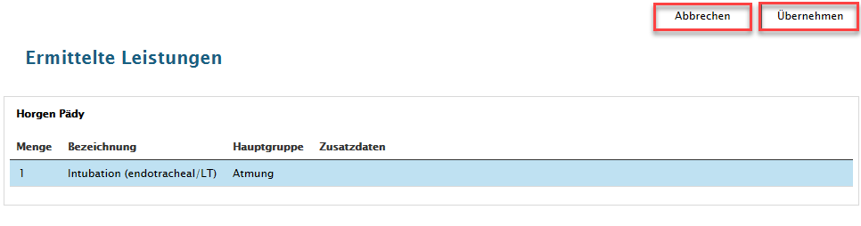
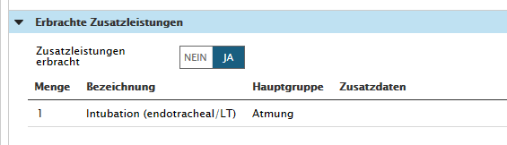
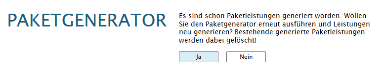

Paketgenerator
Paketgenerator
Mit der Lizenz 'Paketgenerator' können kundenspezifische Zusatzleistungen anhand von Einsatz- und Patientendaten automatisch generiert werden.
Zu beachten ist, dass die benötigten Regeln situativ mit dem Kunden spezifiziert und in Sanostat Evo implementiert werden müssen.
Einsatzerfassung durchführen, im Erfassungsstatus 'In Bearbeitung' oder 'Bereit zur Kontrolle' → Paket generieren

Paketgenerator ermittelt die Leistungen und listet sie auf

Sie überprüfen die generierten Leistungen und übernehmen diese mit der Schaltfläche Übernehmen: die Leistungen werden generiert und bei 'Erbrachte Zusatzleistungen' hinzugefügt
Wenn der Erfasser die Pakete nicht im Status 'Bereit zur Kontrolle' generiert, werden sie automatisch beim Setzen auf den Status 'Einsatz kontrolliert' erzeugt
In dem Fall, dass die generierten Leistungen nicht korrekt sind, klicken Sie jetzt auf Abbrechen: die ermittelten Leistungen werden nicht übernommen und nicht unter 'Erbrachte Zusatzleistungen' gespeichert

Bemerken Sie zu einem späteren Zeitpunkt, dass die generierten Leistungen nicht korrekt sind, können Sie als User mit der Rolle 'Einsatzerfassungskontrolle', die Pakete erneut generieren.
Die MessageBox zum Paketgenerator wird eingeblendet

Schaltfläche JA: bereits erstellte Pakete werden gelöscht und anhand der neuen Leistungen werden neue Pakete generiert
Wiederholung vom obigen Vorgehen unter Paketgenerator ermittelt die Leistungen und listet sie auf
Schaltfläche Übernehmen: die Leistungen werden generiert Schaltfläche Abbrechen: die ermittelten Leistungen werden nicht übernommen
Schaltfläche NEIN: bereits erstellte Pakete bleiben erhalten und werden nicht neu generiert